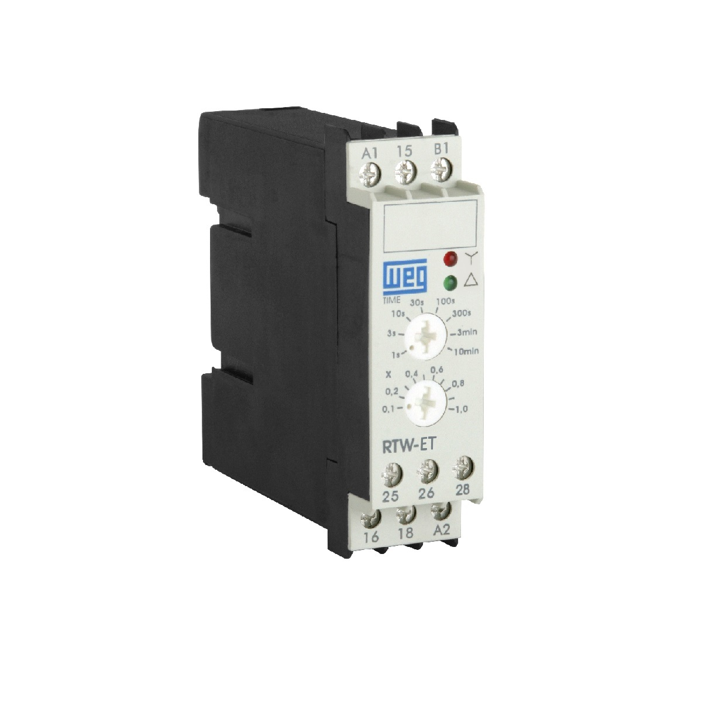

O relé temporizador é um dispositivo eletrônico de comando projetado para abrir ou fechar seus contatos elétricos após um período de tempo pré-determinado pelo operador. Esse tempo pode ser ajustado manualmente através de um pequeno botão rotativo (potenciômetro) na parte frontal do aparelho ou por um visor digital. Ele funciona como um "cronômetro elétrico" para automatizar sequências de eventos.

As aplicações desse dispositivo são muito comuns em sistemas de automação que exigem intervalos. Um exemplo clássico são os sistemas de iluminação temporizada de prédios (onde a luz apaga sozinha após alguns minutos). Na indústria, eles servem para criar etapas sequenciais (ex: a esteira A liga e, após 10 segundos, a esteira B começa a rodar automaticamente) e também no circuito de partida "Estrela-Triângulo" de motores, controlando o tempo exato da mudança de conexão para o motor não queimar.
Eles são classificados em três tipos principais de funcionamento: Retardo na Energização (ON-Delay), onde o relé conta o tempo logo após receber energia para só depois acionar os contatos; Retardo na Desenergização (OFF-Delay), onde os contatos atuam imediatamente quando o relé é ligado, mas demoram um tempo para desligar depois que a energia é cortada; e os Temporizadores Cíclicos, que ficam ligando e desligando os contatos repetidamente em intervalos iguais, funcionando como um sinalizador de pisca-pisca.
O relé térmico é um dispositivo de proteção eletromecânica projetado exclusivamente para proteger os motores elétricos contra o superaquecimento. Esse superaquecimento geralmente é causado por sobrecargas mecânicas prolongadas (como uma esteira travada fazendo o motor fazer força demais) ou pela falta de uma das fases da rede elétrica. Internamente, ele possui lâminas bimetálicas que se curvam lentamente à medida que a corrente elétrica sobe além do normal. Ao se curvarem, elas acionam um contato auxiliar que desliga o circuito de comando, parando o motor antes que o isolamento interno das bobinas derreta.

O relé térmico não possui capacidade de apagar arcos elétricos pesados e, portanto, não protege contra curto-circuitos. Por essa razão, ele nunca trabalha sozinho; ele é projetado para ser acoplado fisicamente logo abaixo de um contator e precisa ter um disjuntor ou fusível instalado antes dele no circuito para cuidar dos curtos-circuitos.
Os tipos principais dividem-se em: relés térmicos diferenciais, que possuem um mecanismo interno extra que detecta com muita rapidez se uma das três fases faltar (protegendo o motor antes que ele queime por desequilíbrio); e os modernos relés térmicos eletrônicos, que não usam lâminas bimetálicas, mas sim sensores eletrônicos internos para medir a corrente, oferecendo uma precisão muito maior e mais opções de regulagem.